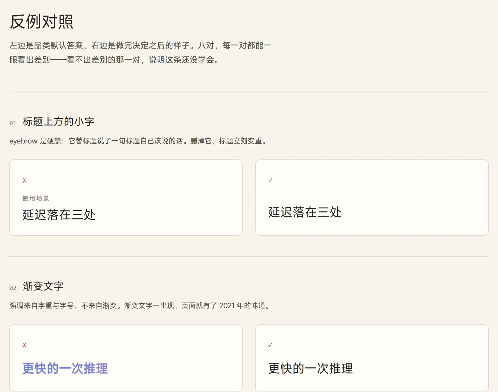

minimal-design
Front-end design rulebook
I wrote my design judgement down as a rulebook, because it has to be executable by someone else.
Why a rulebook, and not a component library
While building my own portfolio site and a few small tools, I kept hitting the same problem: deciding it all over again every time — how many colours this screen gets, how big the heading is, how wide the line runs. Those decisions are not hard in themselves; what is hard is redoing them every time, and getting something slightly different each time.
A component library solves repeated parts. I needed to solve repeated judgement. So what I wrote is not code, it is rules — the file is RULES.md, and its subject is the conditions under which you must refuse.
Decision one: a rule has to be able to say no
A specification that only says "this is how it should be" is not a specification, because it can always be worked around. So the core of this rulebook is an acceptance checklist and a default-reject list: nine checks, each with an explicit failure condition.
- Body contrast below 4.5:1 → fails
- A weight outside the two allowed → fails (400 and 500 in RULES.md)
- Two focus animations on one page → fails; delete one (one focus animation per page: at least 8px of movement or 0.3 opacity, 400–800ms)
Decision two: it should not have components
At first I meant to build a component set alongside it. I dropped that: once components exist, the rules get taken hostage by them — "because the component only comes in this size". What the rules govern is structural relationships (column count, hierarchy, order, area allocation), not pixel values.
So instead it ships with: a colour data set (166 colours — 110 neutrals, 56 accents), six self-hosted subset fonts, a type-scale and line-width conversion table, and a seven-step pipeline (two axes → outline → motion claim → equal division → spatial claim → block allocation → accent area accounting), with four gates in between; fail a gate and you do not move on.
On AI
The rules are mine. Wording and expansion were assisted by a large language model. The criteria, the threshold trade-offs and the reject list are all mine — that part cannot be outsourced, because it is my judgement itself.

Every number has to be able to say where it comes from
| Rule | Threshold | Why this number |
|---|---|---|
| Colours per screen | ≤ 5 colours, one primary only | Past five, people stop remembering which one is important |
| Accent area | ≤ 8% | Cross that area and the accent becomes decoration |
| Body contrast | ≥ 4.5:1 | The WCAG AA floor, not an aesthetic choice |
| Large text contrast | ≥ 3:1 | Same source; the threshold is looser for large text |
| Line width | CJK 32—36 em Latin 65—75 ch · letter-spacing ≥ −0.04em | Derived from type size and reading path; go past it and lines start getting lost |
| Weights | only 400 / 500 in RULES.md · 400 / 600 on this site | Both ends land on a real face, and the middle value goes hollow. The rulebook says 400/500; this site ships 400/600 because Microsoft YaHei has no 500 face — a 500 falls back to Regular and the hierarchy is lost. That is a stated deviation, not a quiet one |
Where these numbers come from
Three rules with no numbers
What holds these up is not a threshold but the reason they cannot retreat any further, so they sit in the default-reject list:
- No eyebrow above a heading (labels go in the left rail or inline)
- Blur and transparency belong to the control layer only, never background decoration
- One division only: 12 columns, never mixed with 6 / 4 / 8
I know that, and I do not intend to blur it on a resume.